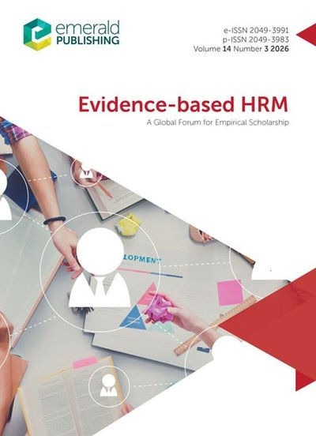

Selangkah lagi
Proses Terbit
Naskah yang sudah dinyatakan diterima, tetapi belum tayang. Penerbit masih mengerjakan koreksi akhir dan penataan halaman. Diterima memang belum berarti terbit, dan jarak keduanya bisa berbulan-bulan.
Linking HR Policy Support and AI Governance to Workforce Adaptation: Evidence from an Emerging Economy
Perjalanan panjang yang berbuah: sembilan bulan dari submit sampai accepted, melewati tiga ronde revisi. Naskah kini dalam proses produksi penerbit dengan status open access hybrid, tinggal menunggu tanggal terbit resmi. Halaman bedah lengkapnya akan dibuka begitu artikel tayang.
Submit
Okt 2025
3 ronde revisi
s.d. Jun 2026
Accepted
5 Jul 2026
Terbit
Menunggu
Despinur Dara, Donny Maha Putra · DOI 10.1108/EBHRM-10-2025-0465 · Halaman jurnal
